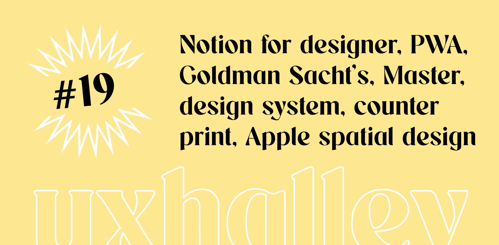

UX Halley, newsletter per designer
uxhalley, edizione #19
19 giugno 2023 — UX Halley: una newsletter bisettimanale che raccoglie news e links utili sulla UX. Le regole sono semplici: max 5 minuti di lettura; se ti interessa, lo approfondisci; se ti piace, lo condividi; a prescindere ci vediamo tra due settimane. Facile facile.
Immagine di copertina dell'edizione di UX Halley, newsetter per designer
Link per designer suggerito nell'edizione di UX Halley, newsletter per designer
spatial design & vision pro
Se hai letto qualche mio ultimo articolo/post avrai anche notato che non sono del tutto d'accordo con il lancio del nuovo #visionpro di Apple, ma a prescindere dalle opinioni è sempre fondamentale aggiornarsi sulle news. Tu lo hai fatto?
Link per designer suggerito nell'edizione di UX Halley, newsletter per designer
progressive web apps
La #PWA è una tecnologia spesso poco conosciuta ed usata, ma perché Sono economiche, molto performanti e da qualche tempo i big della #tecnologia investono per renderle sempre più vicine alle #app "normali".
Link per designer suggerito nell'edizione di UX Halley, newsletter per designer
goldman sachs
Goldman Sachs si occupa di investimenti bancari e il tema è molto caldo, motivo per cui la #UX è veramente importante. Qui trovi il loro #designsystem, sbircia come lo hanno costruito e documentato!
Link per designer suggerito nell'edizione di UX Halley, newsletter per designer
un corso figma
Lo sappiamo bene, ormai #Figma è leader di mercato per il mondo del #design, della #progettazione e #prototipazione e ogni tanto se ne esce con qualche chicca. Ecco l'ultima: un corso gratuito per imparare a creare design system.
Link per designer suggerito nell'edizione di UX Halley, newsletter per designer
notion templates
Conosci Notion? Se no, vivi nella preistoria. Se sì, e ti occupi di design, allora non puoi perderti questo link che raccoglie tantissimi #template gratuiti duplicabili in 1 secondo e mezzo per dare un boost al tuo workflow.
Link per designer suggerito nell'edizione di UX Halley, newsletter per designer
master
Hai presente quella bruttissima storia dove ti dimentichi di fare un componente, te ne accorgi troppo tardi, poi lo fai e lo devi cambiare in centinaia di pagine? Questo plugin risolve ogni problema, lo crei dopo e lo cambi in un click ovunque.
Link per designer suggerito nell'edizione di UX Halley, newsletter per designer
counter print
Arrivati fin qui vuol dire che ci vogliamo bene, che mi segui e che ti piace quello che scrivo. Probabilmente dopo questo link smetterai di seguirmi perché sarà la tua rovina. Decine di prodotti e libri bellissimi per designer. A te la scelta.